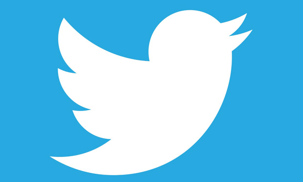
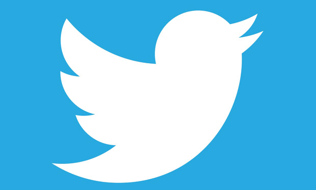

The 2017 Southeast Asian Games (Malay: Sukan Asia Tenggara 2017), officially known as the 29th Southeast Asian Games (or simply 29th SEA Games; Malay: Sukan Asia Tenggara ke-29) and commonly known as Kuala Lumpur 2017 was a Southeast Asian multi-sport event that took place in Kuala Lumpur, Malaysia.
This was the sixth time that Malaysia hosted the games and its first time since 2001. Previously, it had also hosted the 1965, 1971, 1977 and 1989 editions of the games.
By the time the country hosts the games in 2017, it will be 16 years since Malaysia hosted the biennal event. The game closing will be coindice with Malaysia's 60th Independence Day.
 
